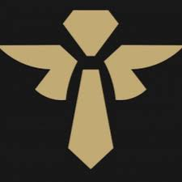

Resumen de todos los roles de league of legends
Top
La toplane es una posición en la que suelen encontrarse campeones fuertes en el 1v1, ya que es una línea
aislada y con poca presencia de objetivos neutrales. Estos campeones se dividen en dos tipos principales,
campeones de daño y campeones de tanque. Los campeones de daño suelen ser asesinos o luchadores, que se
encargan de eliminar a los enemigos, mientras que los campeones de tanque se encargan de absorber el daño
y proteger a los aliados. Existe una tercera clase que sería los campeones de splitpush que pueden
pertenecer
a cualquiera de las dos anteriores, pero que se caracterizan por tener un impacto individual en el mapa.

Mid
La midlane es el rol con mayor impacto a nivel de rotaciones dentro de los laners, ya que se encuentra
en el centro del mapa y puede moverse a cualquier lado con facilidad. Los campeones de esta posición suelen
ser magos o asesinos, que se encargan de hacer daño y eliminar a los enemigos. Existen también campeones
de tanque, pero suelen ser menos comunes. Los campeones de esta posición suelen tener un gran impacto en
el juego, ya que pueden moverse a cualquier lado del mapa con facilidad y suelen tener un gran daño.
La principal estrategia es controlar la prioridad de la línea y rotar a las otras líneas para ayudar a los
compañeros y conseguir objetivos neutrales.

Jungle
| Campeón |
Funciones |
| Tanques |
Son campeones que suelen tener un buen clear y proporcionan un gran control de masas y utilidad al
equipo. Suelen ser los encargados de iniciar las peleas de equipo y de absorber el daño enemigo.
|
| Asesinos |
Son campeones que proporcionan un gran daño a un solo objetivo en la mayoría de casos y suelen
tener gran movilidad. Suelen ser los encargados de eliminar a los carries enemigos y de conseguir
cazadas para tener ventaja numérica en las peleas de equipo.
|
| Escalado |
Estos campeones suelen tener un clear rápido y un gran daño en el late game, pero suelen ser débiles
en el early game. Suelen ser los encargados de farmear y de conseguir objetivos neutrales para
conseguir ventaja en el late game.
|
| Early gank |
Estos campeones no disponen de un buen clear, pero tienen un gran potencial de gank en el early
game.
Suelen ser los encargados de conseguir ventaja en las líneas enemigas en las primeras fases de la
partida
y conseguir ejecutar dives tempranos al igual que objetivos neutrales.
|

ADC
La posición de adc viene definida por ad, significando autoattack dmg, y carry, el principal daño del
equipo.
En esta posición se suelen jugar personajes de rango tales como los pertenecientes a la clase de
tiradores,
magos de rango o incluso combinaciones de campeones que se complementen entre sí siendo yasuo malph un
ejemplo.
Se caracterizan por ser personajes de escalado con poca vida pero mucho daño, por lo que suelen ser el
objetivo
principal de los asesinos y los tanques.
La estrategia principal en este rol se suele centrar en eliminar minions y tomar placas de las torres
muriendo
el menor número de veces posible
Botlane


Support
Esta posición está formada por campeones de cuatro tipos:
- Los tanques, que se encargan de absorber el daño y proteger a los aliados.
- Los magos, que se encargan de hacer daño y controlar a los enemigos.
- Los curanderos, que se encargan de curar a los aliados y protegerlos.
- Los asesinos, que se encargan de hacer daño y eliminar a los enemigos.
Los supports suelen ser los encargados de proteger al adc y de ayudar al equipo en general, por lo que
suelen
ser los que más visión aportan al equipo y los que más control de masas tienen.